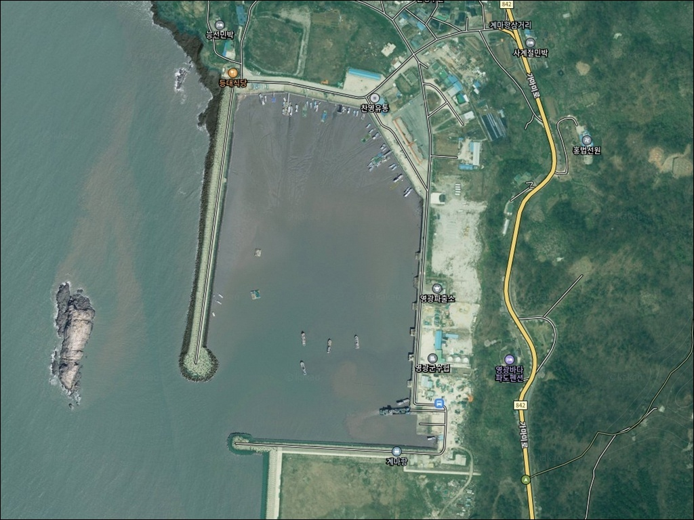
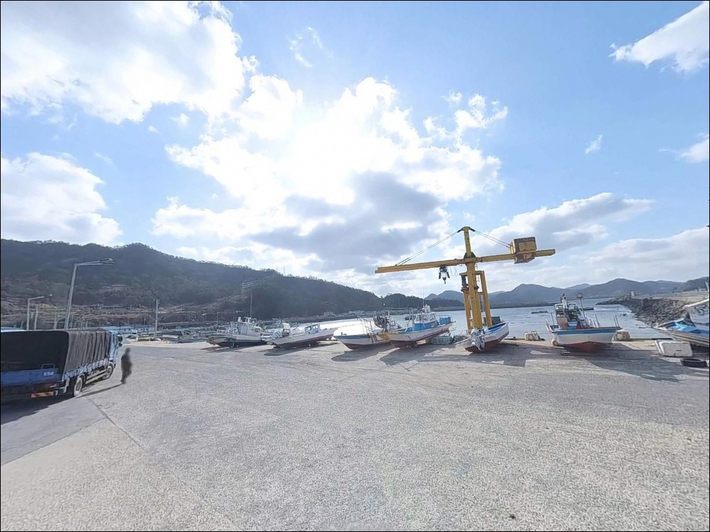
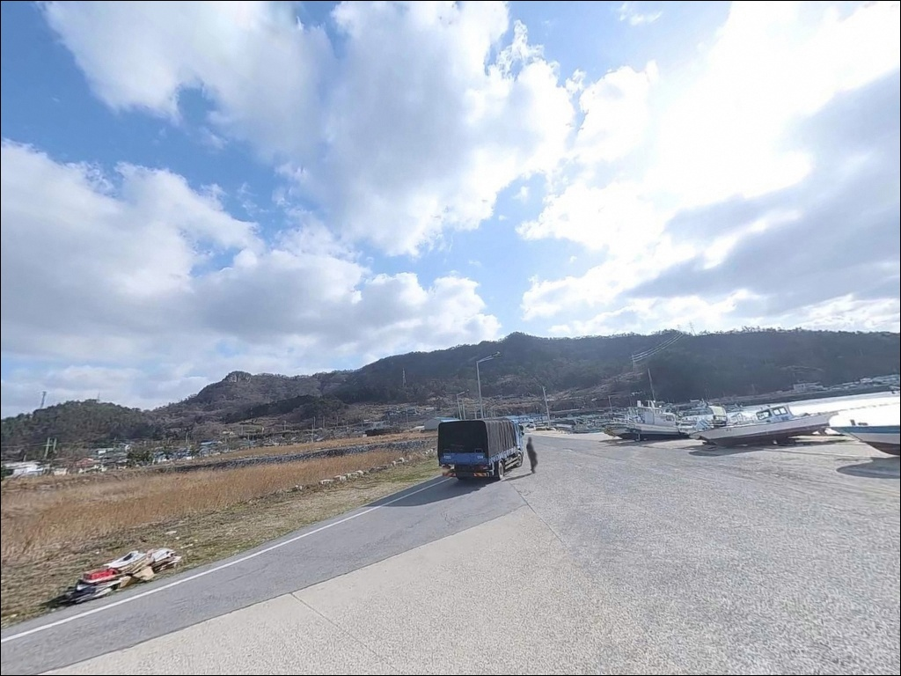
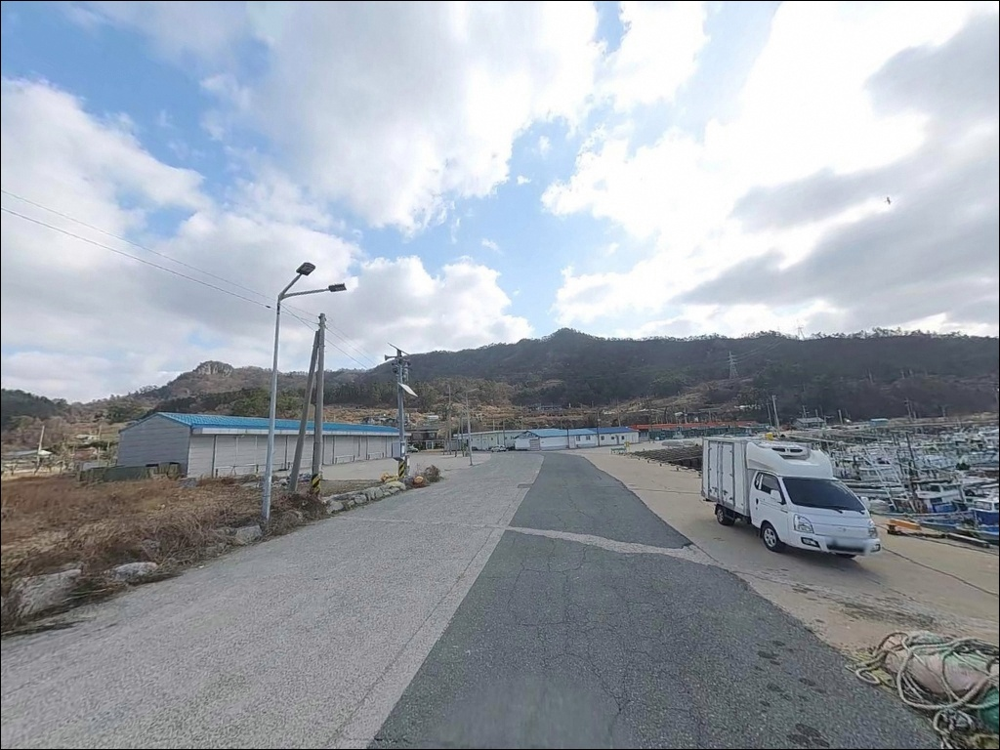
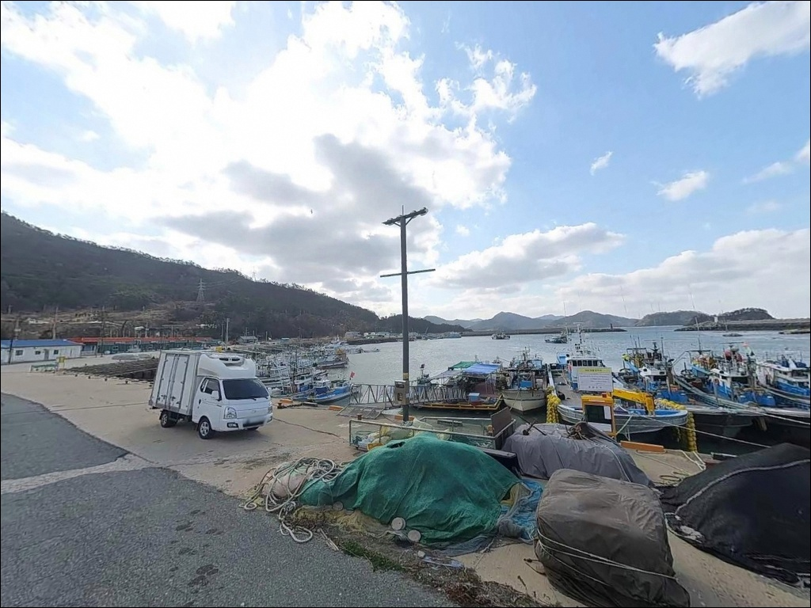
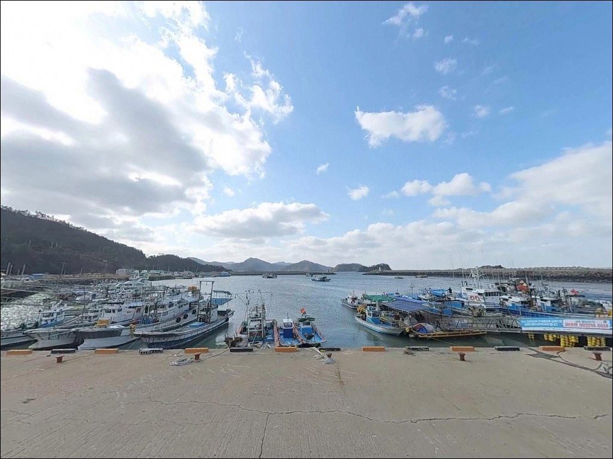
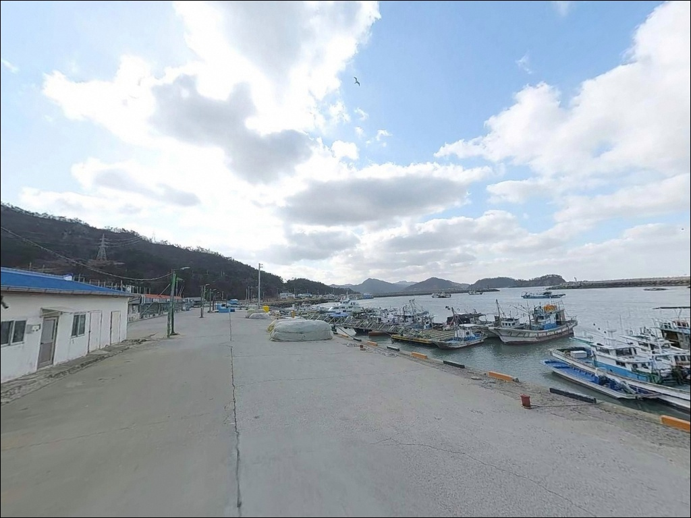
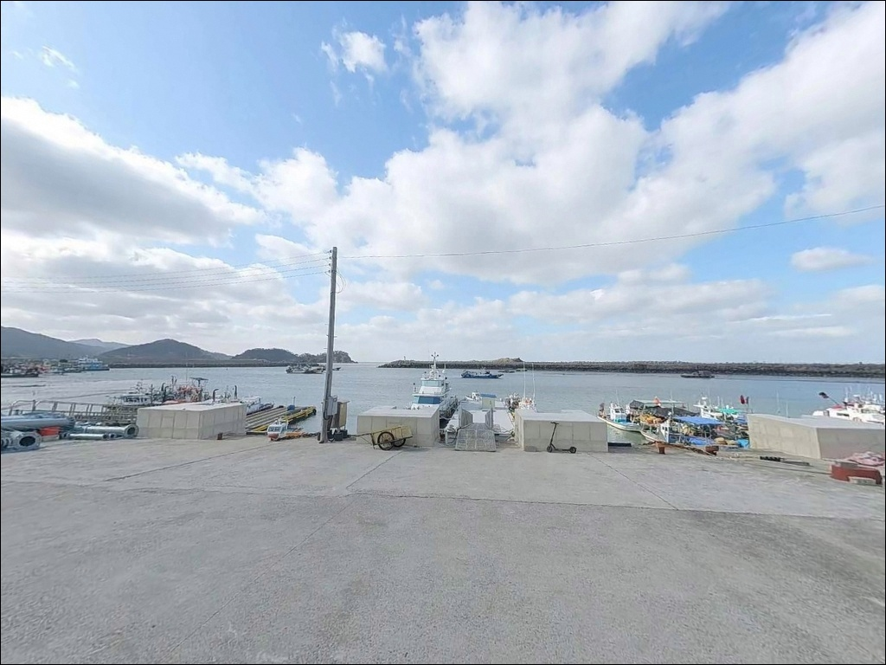
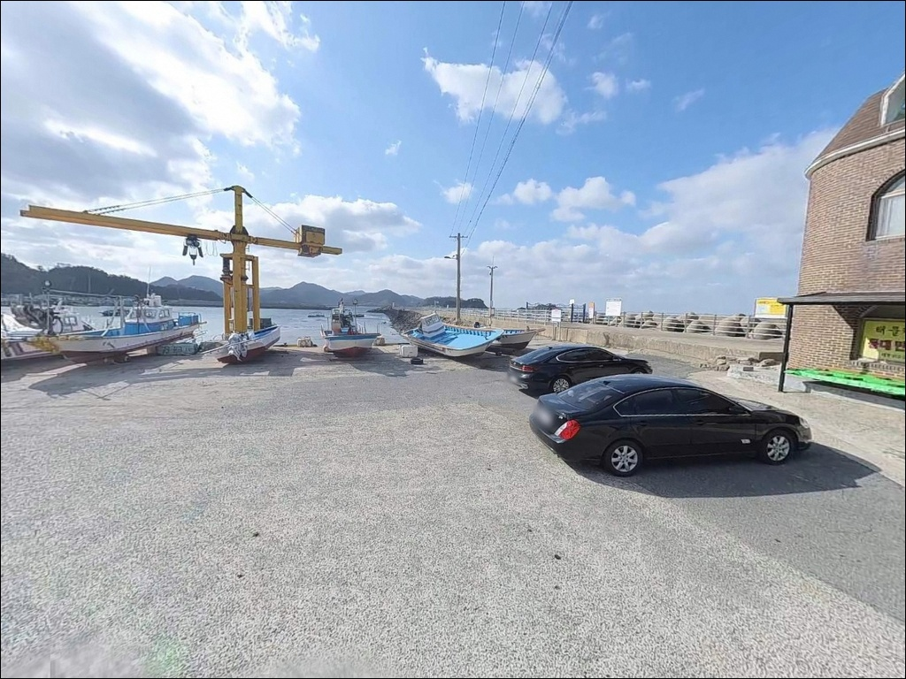

계마항, 계마포구, 전남 영광군 고요함이 매력인 차박, 낚시 감성 장소


포인트 안내
계마항
전남 영광군 홍농읍 계마리 894-32
계마항 외항 방파제에서 가장 자주 나오는 실수는
물때 확인을 생략하고 진입하는 것입니다.
서해 조석 간만 차가 큰 이 구간에서
사리 전후를 택하면 칠산바다에서 흘러오는 조류가 세져
채비가 바닥에 닿기 전에 흘러버리는 상황이 생깁니다.
이 글은 계마항의 방파제 구조와 진입 환경,
낚시 방식별 적합성에 집중합니다.
전남 영광군 홍농읍 계마리,
칠산바다를 서쪽으로 바라보고 있는 계마항은
1971년에 국가어항으로 지정된 어항입니다.
안마도를 오가는 정기여객선이 출항하는 곳이기도 하며,
빨간등대와 하얀등대가 있는 두 개의 방파제가
외항과 내항을 나누는 전형적인 국가어항 구조를 갖추고 있습니다.
이 글은
계마항의 진입 동선, 차박 여건,
방파제 구조와 낚시 방식별 적합성에 집중합니다.
조황 단정이나 특정 어종 보장은
이 글의 범위에 포함되지 않습니다.

1. 포인트 위치 및 진입 동선
홍농읍 계마리 방향으로 이어지는 포장도로를 따라
항구 입구까지 차량 접근이 가능합니다.
국가어항 규모로 항내 도로와 주변 공간이 정비되어 있어
승용차와 소형 SUV 기준 진입에 어려움이 없는 구조입니다.
회차 공간도 항 내부에 확보되어 있어
캠핑 장비를 실은 차량도 방향을 돌리는 데 무리가 없습니다.
방파제 입구 주변 주차 공간은 무료로 운영됩니다.
다만 안마도 정기여객선이 출항하는 선착장이 있어
이른 시간대 선박 접안 동선 주변에는 주차를 피하는 편이
현장 마찰을 줄이는 방식입니다.
가마미해수욕장이 약 0.8km 거리에 붙어 있고
해수욕장 방향에도 주차 여지가 있습니다.
항 입구 주차 공간이 여의치 않은 상황이라면
가마미해수욕장 쪽을 보조 거점으로 활용하는 동선이 자연스럽습니다.

2. 차박 환경 평가 및 야간 체류 여건
계마항 주변은 어선 계류지와 마을이 함께 있는 어촌 환경입니다.
민가 밀집도가 어느 정도 있어
완전한 프라이버시를 기대하기는 어려운 구조입니다.
야간 통행량은 많지 않으나,
일출 전후로 어선 움직임이 시작되는 항구 특성상
이른 새벽 주변이 조용하지 않을 수 있습니다.
서쪽으로 열린 외항 노출 구조로 바람 영향이 있는 편입니다.
북서풍이 부는 계절에는 외항 쪽 파고가 높아지고
방파제 주변 주차 공간까지 바람이 직접 닿는 상황이 생깁니다.
낚시를 마치고 하룻밤 머무는 용도라면
약 0.4km 거리의 가마미야영장이
차박 거점으로 더 안정적인 선택입니다.
항내 등대 및 선착장 조명이 있어 완전 흑암은 아니나,
방파제 외항 끝단 쪽으로 갈수록 어두워집니다.
야간 낚시 시 헤드랜턴과 개인 조명은 필수입니다.


3. 주변 편의시설 및 인프라 현황
항구 주변에 식사를 해결할 수 있는 식당이 있습니다.
어촌 마을 규모 특성상 대형 마트나 편의점은
현장에서 기대하기 어려운 편이라,
식수와 낚시 소품은 출발 전에 갖춰 가는 방식이
현실적입니다.
부족한 물품이 생긴다면 홍농읍 방향으로 이동하는 동선이
가장 빠르게 해결하는 방법입니다.
가마미해수욕장은 약 0.8km 거리에 있어
여름 시즌에는 해수욕장 편의시설을 함께 활용할 수 있습니다.
가마미야영장은 약 0.4km로 더 가까운 거리로,
낚시와 야영을 묶어 방문하는 경우
인프라 거점을 겸하는 선택지가 됩니다.

4. 외항 방파제 진입 전 반드시 확인할 준비사항
계마항 방문 전에 가장 먼저 할 것은 물때 확인입니다.
서해 서향 방파제는 조석 간만 차가 크고
사리 전후와 조금 전후 사이에 조류 세기 차이가 뚜렷합니다.
바다타임에서 홍농읍 계마리 기준 물때를 확인하고,
조금 전후 또는 간조와 만조 사이 흐름이 살아나는 타이밍을
진입 기준으로 잡는 것이 기본입니다.
기상 확인도 물때만큼 중요합니다.
서쪽으로 열린 외항 노출 구조는
바람이 강해지는 날씨에 방파제 발판 상태가 빠르게 나빠집니다.
해양기상정보포털에서 풍랑 예보를 확인한 뒤 출발해야 하며,
기상 악화 예보가 있으면 외항 진입 자체를 재고하는 편이
안전합니다.
방파제 테트라포트 구간이 있어
채비가 밑걸림으로 끊기는 빈도가 높은 편입니다.
여분 채비는 넉넉하게 준비해 가는 것이 기본이며,
야간 낚시라면 헤드랜턴과 구명조끼는 필수입니다.
안마도 여객선이 운항하는 선착장이기도 하므로
어선 작업 구역과 여객선 접안 동선 주변에는
자리를 잡지 않는 것이 기본 매너입니다.

5. 지형 기반 낚시 여건 분석
계마항에는 빨간등대와 하얀등대가 각각 붙어 있는
두 개의 방파제가 있습니다.
낚시 활동이 주로 이루어지는 쪽은 남방파제로,
테트라포트 구간과 석축 구간이 섞인 구조입니다.
테트라 주변은 흘림찌 자리, 석축 구간은 원투 자리로
나뉘어 활용하는 방식이 이 방파제 구조에 자연스럽습니다.
칠산바다를 향해 서쪽으로 열린 외항 구조로,
외항 쪽에는 조류 흐름이 살아있는 구간이 형성됩니다.
방파제 끝단으로 갈수록 수심이 깊어지는 구조라
조류가 맞는 타이밍에 외항 방향으로 채비를 보내면
바닥층 탐색 조건이 갖춰지는 구간입니다.
앞바다에 크고 작은 섬들이 분포한 칠산바다 특성이
이 방파제의 낚시 여건을 뒷받침하는 배경입니다.
계마항은 감성돔 배낚시 출항지로도 알려진 국가어항으로,
방파제 직접 낚시와 선상 출조를 동시에 고려할 수 있는 구조입니다.
최신 조황은 가기 전에 꼭 검색해 보시기 바랍니다.


6. 계마항 방파제에 어울리는 낚시 스타일
이 포인트에서 가장 무난하게 시도할 수 있는 방식은 원투낚시입니다.
남방파제 석축 구간에서 외항 방향으로 채비를 멀리 보내면
조류 흐름이 살아있는 바닥층을 탐색할 수 있습니다.
정조 전후 조류가 느려지는 타이밍에 채비를 안착시키는 방식이
이 포인트 구조에 잘 맞습니다.
찌낚시는 외항 테트라포트 주변에서 시도해 볼 만합니다.
테트라 경계선을 따라 흘림찌 방식으로 채비를 흘리면
조류 흐름을 타며 바닥층을 자연스럽게 탐색하는 구조가 됩니다.
늦가을 감성돔 시즌에 이 포인트를 찾는 낚시꾼들이
주로 활용하는 방식이기도 합니다.
루어낚시는 방파제 끝단과 조류가 살아있는 구간을 중심으로
시도해볼 수 있습니다.
서해 서향 방파제 끝단은 조류 변화가 집중되는 구간이 생기는 편이라
농어나 우럭을 노리는 라이트 루어 게임이 어울립니다.
남방파제 외항 끝단은 칠산바다 조류가 직접 닿는 구간으로,
원투낚시와 찌낚시 모두 조건이 갖춰지는 자리입니다.

7. 대안 포인트 및 플랜 B 동선
계마항 외항 조류가 너무 강하거나
기상이 여의치 않을 때 첫 번째 대안은
법성포항입니다.
같은 영광군 안에서 약 9km 거리에 있으며,
항 규모가 크고 원투낚시와 찌낚시 자리 모두
안정적으로 잡을 수 있는 구조입니다.
같은 해안선을 따라 이동하면
백수 해안도로 일대 백암리·대신리 갯바위 구간이 이어집니다.
방파제 대신 갯바위 스타일로 전환하고 싶을 때
해안선을 벗어나지 않고 이동하는 플랜 B로
적합한 구간입니다.
차박 거점으로는 계마항 단독보다
약 0.4km 거리의 가마미야영장이 안정적입니다.
낚시는 계마항 방파제에서, 야영은 가마미야영장을 거점으로 삼는 조합이
이 권역에서 가장 효율적인 방문 동선입니다.
성수기 야영장 운영 여부는 출발 전에 미리 확인하는 편이 좋습니다.

물때와 방파제 구조를 먼저 파악하면
계마항이 달라 보입니다
원투낚시나 방파제 찌낚시를 즐기는 낚시인에게
계마항 남방파제는 칠산바다 조류 흐름을
활용할 수 있는 서해 방파제 포인트입니다.
감성돔 배낚시 출항지로도 알려진 국가어항이라
선상 출조를 함께 계획한다면
거점 역할도 겸하는 구조입니다.
반면 물때 확인 없이 찾아가거나
기상 예보를 생략하고 외항에 진입하면
강조류와 높은 파고가 낚시를 불가능하게 만드는 상황을
마주칠 수 있습니다.
물때 확인, 기상 점검, 여분 채비 준비,
이 세 가지를 갖추고 가면
계마항은 서해 서향 방파제로서의 여건을 제대로 활용할 수 있는 곳입니다.
차박은 항구 단독보다
가마미야영장을 함께 활용하면
낚시와 야영을 한 번에 챙기는 방문이 가능합니다.